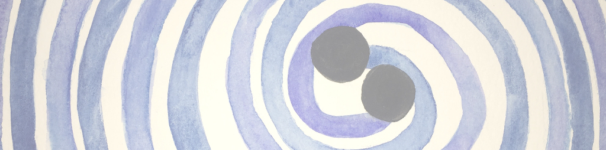

News
For the latest news, follow us on Twitter!
Some highlights:
2024
2023
2022
2021
- LIGO/Virgo first search for gravitational wave lensing
- AAS highlight about work Daniel Holz studyng the science with binary black hole mergers above the pair instability supernova mass gap
- UChicago news article about work with Miguel Zumalacarregui on the new signatures of gravitational wave lensing beyond general relativity
2020
- Best thesis in theoretical physics from Spanish Royal Society of Physics (RSEF)
- Enrique Fuentes Quintana Prize best thesis in STEM (Fundacion Funcas)
- Extraordinary Doctorate Prize from UAM (UAM)
2019
2018
- Sparrho Early Career Research Prize
2017